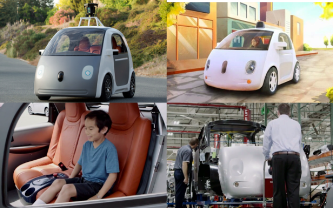
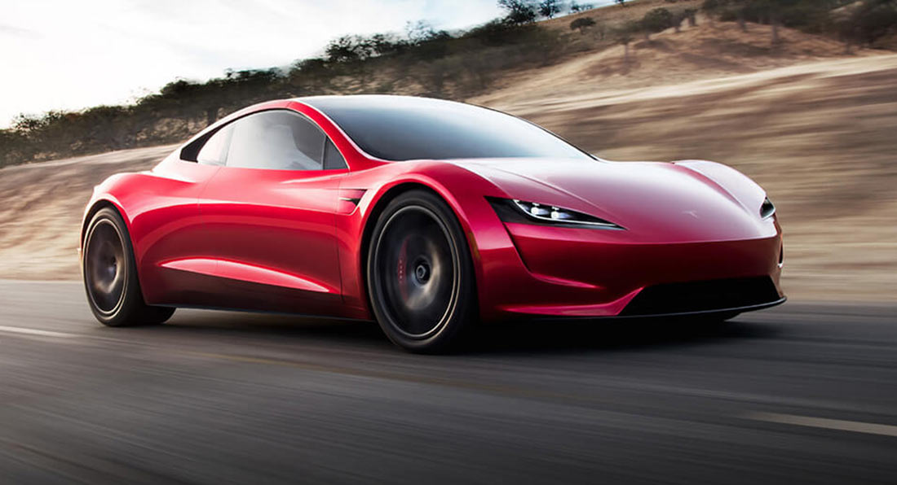

Останнім часом стали усе більше говорити про те, що відома компанія Google має намір докорінно змінити концепцію особистого транспорту. Спробуємо в нашій статті провести огляд цього «мультяшного» електричного автомобіля, у якого навіть
немає звичайного рульового колеса і спробувати знайти соломонове рішення. Потрібен людству такий автомобіль, як Google Car чи це лише задум, яка якщо і відбудеться, то лише через сотні років? Чи варто довіряти керування транспортним
засобом автомобілю-беспилотнику чи це небезпечно?
Автомобілі, для управління якими не потрібний водій, можуть стати реальністю у наступне десятиріччя, пророкують експерти. Над автомобілем майбутнього вже активно працюють німецькі автовиробники.
Google car

Tesla

"Розрахунок на те, що можна просто замінити всі бензинові автівки електромобілями - таке ж авто, такий же розмір, лише інший двигун, - не спрацює, - каже Крайст. - Ринок завоюють маленькі й легкі міські авто". Так само і з автомобілями
без водіїв, впевнений експерт. Мовляв, хтозна, чи користуватимуться ними так, як на це розраховують виробники.